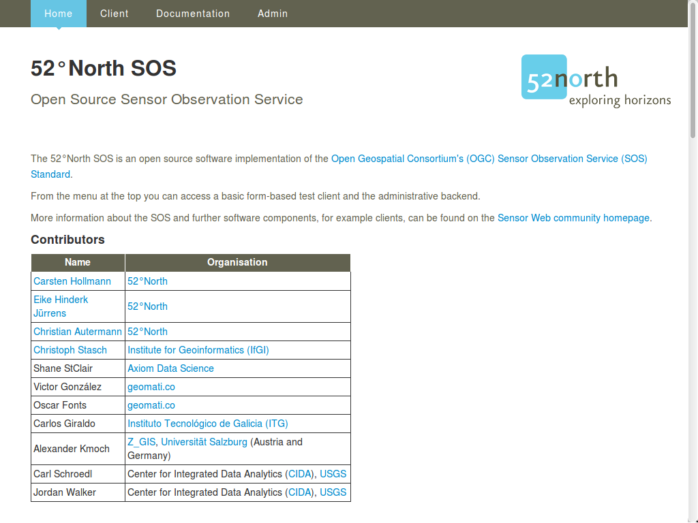
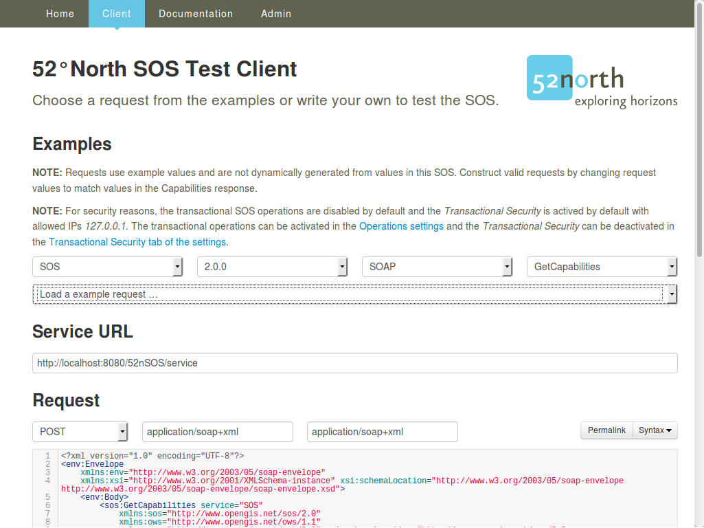

52°North SOS Quickstart¶
Der 52°North SOS Webservice ermöglicht den vollständig kompatiblen Zugriff und die Bereitstellung von (raumbezogenen) Sensordaten. Dies umfasst sowohl Messwerte als auch zugehörige Metadaten.
Dieses Quickstart-Dokument umfasst:
Abfrage der 52°North SOS-Fähigkeiten, um festzustellen, welche Abfragen sie unterstützt und welche Daten sie anbietet.
Beispiel-Anfrage um Messdaten des SOS abzurufen.
Informationen zur Datenvisualisierung in einem einfachen, mit dem SOS mitgelieferten Viewer „Helgoland“.
Informationen zum Ausprobieren einer REST-Schnittstelle für Anwendungsentwickler.
Erste Schritte¶
Rufen Sie auf.
- This will open the 52°North SOS client welcome page in firefox at
http://localhost:8080/52nSOS/ (see Fig. 1).
Abb. 1: 52°North SOS Anwendung - Willkommens-Seite.
{kind=link}
Click Client from the top menu bar. Once you know the capabilities of an SOS Server, (see Fiq. 2) you can craft appropriate queries. This is made easier by selecting sample queries. Using the information from the capabilities document, you can adjust the available example queries.
Abb. 2: 52°North SOS Anwendung - Test Client mit GetCapabilities-Anfrage.
Um die Sensordaten innerhalb des Zeitintervals vom 2018-07-02T23:45:00.000+00:00 to 2018-07-04T23:45:00.000+00:00 für jede Zeitreihe zu bekommen, setzte die folgende Anfrage nach der Auswahl ein in the test client’s request field:
{kind=link}
<?xml version="1.0" encoding="UTF-8"?>
<env:Envelope
xmlns:env="http://www.w3.org/2003/05/soap-envelope"
xmlns:xsi="http://www.w3.org/2001/XMLSchema-instance"
xsi:schemaLocation="http://www.w3.org/2003/05/soap-envelope http://www.w3.org/2003/05/soap-envelope/soap-envelope.xsd">
<env:Body>
<sos:GetObservation service="SOS" version="2.0.0"
xmlns:sos="http://www.opengis.net/sos/2.0"
xmlns:fes="http://www.opengis.net/fes/2.0"
xmlns:gml="http://www.opengis.net/gml/3.2"
xmlns:swe="http://www.opengis.net/swe/2.0"
xmlns:xlink="http://www.w3.org/1999/xlink"
xmlns:swes="http://www.opengis.net/swes/2.0"
xsi:schemaLocation="http://www.opengis.net/sos/2.0 http://schemas.opengis.net/sos/2.0/sos.xsd">
<sos:temporalFilter>
<fes:During>
<fes:ValueReference>phenomenonTime</fes:ValueReference>
<gml:TimePeriod gml:id="tp_1">
<gml:beginPosition>2018-07-02T23:45:00.000+00:00</gml:beginPosition>
<gml:endPosition>2018-07-04T23:45:00.000+00:00</gml:endPosition>
</gml:TimePeriod>
</fes:During>
</sos:temporalFilter>
</sos:GetObservation>
</env:Body>
</env:Envelope>
Listing 1: Abfrage für Messdaten.
Was Sie noch ausprobieren können¶
Versuchen Sie weitere Abfragen der Test-Anwendung.
Passen Sie die Beispielanfragen an, um andere Daten zu erhalten.
Probiere den SOS administrator mit dem Nutzernamen
userund dem Passwortuser.Probieren Sie den Viewer Client von Helgoland (sh. Abb. 3).
Testen Sie weitere Beispieldaten, in dem Sie die folgenden Schritte ausführen:
Öffen Sie im SOS-Administrator die „database maintenance“-Seite.
Leeren Sie die Datanbank mit dem „Clear Datasource“-Knopf“ (Dadurch werden die initialen Beispiel-Daten gelöscht. Sie können OSGeoLive neustarten, um Sie zurück zu bekommen.).
Fügen Sie dynamisch erzeugte Beispieldaten durch einen Klick auf den „Insert sample data“-Knopf. Seien Sie informiert, dass dieser Prozess einige Minuten in Anspruch nimmt.
Open Helgoland again and explore the generated sample data.
{kind=link}
Abb. 3: 52°North SOS Anwendung - JavaScript-Client mit Zeitreihendaten.
Probiere die Sensor Web REST API aus (siehe Listing 2):
[
{
id: "services",
label: "Service Provider",
description: "A service provider offers timeseries data."
},
{
id: "stations",
label: "Station",
description: "A station is the place where measurement takes place."
},
{
id: "timeseries",
label: "Timeseries",
description: "Represents a sequence of data values measured over time."
},
{
id: "categories",
label: "Category",
description: "A category group available timeseries."
},
{
id: "offerings",
label: "Offering",
description: "An organizing unit to filter resources."
},
{
id: "features",
label: "Feature",
description: "An organizing unit to filter resources."
},
{
id: "procedures",
label: "Procedure",
description: "An organizing unit to filter resources."
},
{
id: "phenomena",
label: "Phenomenon",
description: "An organizing unit to filter resources."
},
{
id: "platforms",
label: "Platforms",
description: "A sensor platform where observations are made."
},
{
id: "geometries",
label: "Geometries",
description: "A geometry where observations are made or that was observed."
}
]
Listing 2: Ausgabe des Sensor Web REST API Endpunktes.
Was kommt als Nächstes?¶
Weitere Informationen über den 52°North SOS und/oder 52°North erhalten Sie über folgende Wege:
52°North SOS Überblick
52°North Sensor Web Mailing Liste: sensorweb@52north.org
52°North Sensor Web community
52°North SOS-Client
52°North SOS Webseite
Die Entwicklung dieser Version des 52°North SOS wurde durch verschiedeneProjekte, Organisationen und Personen unterstützt. Mehr Informationen finden Sie in der 52°North SOS Anwendung.
Wir möchten der belgischen belgischen Interregional Environment Agency (IRCEL - CELINE) für die Bereitstellung der Demodaten dieser SOS-Installation danken. Die Demo-Daten sind unter einer CC BY 3.0 veröffentlicht.
Sollte der SOS nicht erreichbar sein, so prüfen Sie bitte mit folgendem Befehl, ob der Tomcat Web Service-Container läuft:
user@osgeolive:~$ sudo systemctl status tomcat8.service | grep Active
Active: active (running) since Wed 2017-06-21 12:00:42 UTC; 42min ago <-- Tomcat is running
[...]
Active: inactive (dead) <-- Tomcat not runing, so please start:
user@osgeolive:~$ sudo systemctl start tomcat8.service
Active: active (running) since Wed 2017-06-21 12:52:42 UTC; 3s ago <-- Tomcat is running, now
Listing 3: Tomcat Status und Start (Passwort für sudo: user).